library(tidymodels)
library(tidyverse)
library(palmerpenguins)
library(modeldata)
library(vip)
library(corrplot)
# Set theme
theme_set(theme_minimal())
# For reproducibility
set.seed(123)Chapter 8: Introduction to Tidymodels - Theory and Practice
Learning Objectives
By the end of this chapter, you will understand:
- The philosophy and structure of tidymodels
- Core machine learning concepts and theory
- The bias-variance tradeoff
- Overfitting and underfitting
- Cross-validation theory
- The tidymodels workflow
- Key packages in the tidymodels ecosystem
Download R Script
You can download the complete R code for this chapter: 📥 Download 08-tidymodels-intro.R
Machine Learning Foundations
What is Machine Learning?
Machine learning is the science of getting computers to learn patterns from data without being explicitly programmed. Instead of writing rules, we let algorithms discover patterns.
Key Concepts:
- Supervised Learning: Learning from labeled examples (y is known)
- Classification: Predicting categories
- Regression: Predicting continuous values
- Unsupervised Learning: Finding patterns without labels
- Clustering: Grouping similar observations
- Dimensionality reduction: Simplifying complex data
- Features (X): Input variables/predictors
- Target (y): Output variable we want to predict
- Training: Process of learning patterns from data
- Inference: Making predictions on new data
The Learning Process
Mathematical Foundation
In supervised learning, we seek to find a function f that maps inputs X to outputs y:
\[y = f(X) + \epsilon\]
Where: - \(f\) is the true underlying function - \(\epsilon\) is irreducible error (noise)
Our goal is to estimate \(\hat{f}\) that minimizes prediction error:
\[\text{Error} = \text{Bias}^2 + \text{Variance} + \text{Irreducible Error}\]
The Bias-Variance Tradeoff
Understanding Bias and Variance
# Demonstrate bias-variance tradeoff
n <- 100
x <- seq(0, 10, length.out = n)
# True function
true_function <- function(x) sin(x) + 0.5 * x
# Generate data with noise
y <- true_function(x) + rnorm(n, sd = 0.5)
data_sim <- tibble(x = x, y = y, y_true = true_function(x))
# Fit models of different complexity
models <- list(
"Underfit (High Bias)" = lm(y ~ x, data = data_sim),
"Good Fit" = lm(y ~ poly(x, 3), data = data_sim),
"Overfit (High Variance)" = lm(y ~ poly(x, 15), data = data_sim)
)
# Generate predictions
predictions <- map_df(names(models), function(model_name) {
model <- models[[model_name]]
tibble(
x = x,
y_true = true_function(x),
y_pred = predict(model),
model = model_name
)
})
# Visualize
ggplot() +
geom_point(data = data_sim, aes(x = x, y = y), alpha = 0.3) +
geom_line(data = data_sim, aes(x = x, y = y_true),
color = "black", linewidth = 1.5, linetype = "dashed") +
geom_line(data = predictions, aes(x = x, y = y_pred, color = model),
linewidth = 1.2) +
facet_wrap(~model, ncol = 3) +
scale_color_manual(values = c("red", "green", "blue")) +
labs(
title = "Bias-Variance Tradeoff Demonstration",
subtitle = "Black dashed line = true function, Points = observed data",
x = "X",
y = "Y"
) +
theme(legend.position = "none")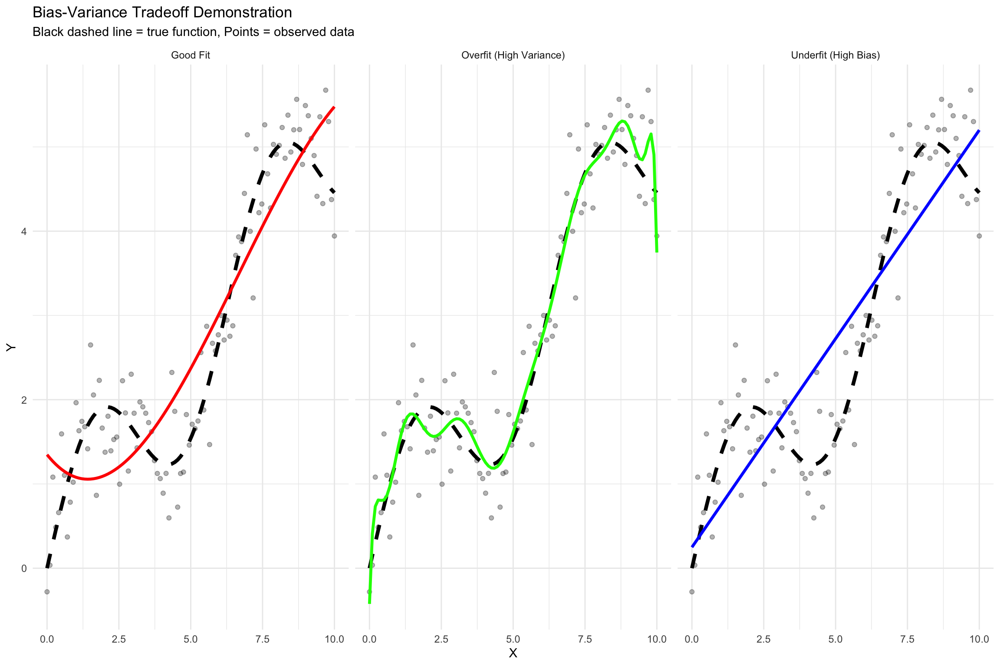
Key Insights:
- Bias: Error from overly simplistic assumptions
- High bias = Underfitting
- Model misses relevant patterns
- Variance: Error from sensitivity to small fluctuations
- High variance = Overfitting
- Model learns noise as patterns
- High variance = Overfitting
- Goal: Find the sweet spot balancing bias and variance
Overfitting and Underfitting
Detecting Overfitting
# Create training and test sets
set.seed(123)
train_indices <- sample(1:n, size = 0.7 * n)
train_data <- data_sim[train_indices, ]
test_data <- data_sim[-train_indices, ]
# Fit models of increasing complexity
complexity_range <- 1:12
train_errors <- numeric(length(complexity_range))
test_errors <- numeric(length(complexity_range))
for (i in complexity_range) {
model <- lm(y ~ poly(x, i), data = train_data)
train_pred <- predict(model, train_data)
test_pred <- predict(model, test_data)
train_errors[i] <- mean((train_data$y - train_pred)^2)
test_errors[i] <- mean((test_data$y - test_pred)^2)
}
# Plot training vs test error
error_data <- tibble(
complexity = rep(complexity_range, 2),
error = c(train_errors, test_errors),
type = rep(c("Training", "Test"), each = length(complexity_range))
)
ggplot(error_data, aes(x = complexity, y = error, color = type)) +
geom_line(linewidth = 1.2) +
geom_point(size = 3) +
scale_color_manual(values = c("Training" = "blue", "Test" = "red")) +
labs(
title = "Training vs Test Error: Detecting Overfitting",
subtitle = "Test error increases while training error decreases = Overfitting",
x = "Model Complexity (Polynomial Degree)",
y = "Mean Squared Error",
color = "Dataset"
) +
geom_vline(xintercept = 3, linetype = "dashed", alpha = 0.5) +
annotate("text", x = 3, y = max(test_errors) * 0.9,
label = "Optimal\nComplexity", hjust = -0.1)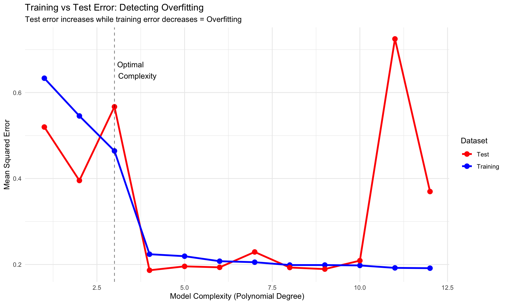
Introduction to Tidymodels
The Tidymodels Ecosystem
Tidymodels is a collection of packages for modeling and machine learning using tidyverse principles:
# Core tidymodels packages
tidymodels_packages <- c(
"rsample", # Data splitting and resampling
"parsnip", # Model specification
"recipes", # Feature engineering
"workflows", # Workflow management
"tune", # Hyperparameter tuning
"yardstick", # Model evaluation metrics
"broom", # Tidy model outputs
"dials" # Parameter tuning dials
)
# Display package info
tibble(
Package = tidymodels_packages,
Purpose = c(
"Data splitting, cross-validation, bootstrapping",
"Unified interface for model specification",
"Feature engineering and preprocessing",
"Combine preprocessing and modeling",
"Hyperparameter optimization",
"Performance metrics and evaluation",
"Convert model outputs to tidy format",
"Tools for creating tuning parameter sets"
)
) %>%
knitr::kable()| Package | Purpose |
|---|---|
| rsample | Data splitting, cross-validation, bootstrapping |
| parsnip | Unified interface for model specification |
| recipes | Feature engineering and preprocessing |
| workflows | Combine preprocessing and modeling |
| tune | Hyperparameter optimization |
| yardstick | Performance metrics and evaluation |
| broom | Convert model outputs to tidy format |
| dials | Tools for creating tuning parameter sets |
Tidymodels Philosophy
- Consistency: Same interface across different models
- Composability: Modular components that work together
- Reproducibility: Clear, documented workflows
- Best Practices: Built-in safeguards against common mistakes
A Complete Tidymodels Workflow
Let’s build a complete machine learning workflow to predict penguin species:
1. Data Exploration
# Load and explore data
penguins_clean <- penguins %>%
drop_na()
# Basic exploration
glimpse(penguins_clean)Rows: 333
Columns: 8
$ species <fct> Adelie, Adelie, Adelie, Adelie, Adelie, Adelie, Adel…
$ island <fct> Torgersen, Torgersen, Torgersen, Torgersen, Torgerse…
$ bill_length_mm <dbl> 39.1, 39.5, 40.3, 36.7, 39.3, 38.9, 39.2, 41.1, 38.6…
$ bill_depth_mm <dbl> 18.7, 17.4, 18.0, 19.3, 20.6, 17.8, 19.6, 17.6, 21.2…
$ flipper_length_mm <int> 181, 186, 195, 193, 190, 181, 195, 182, 191, 198, 18…
$ body_mass_g <int> 3750, 3800, 3250, 3450, 3650, 3625, 4675, 3200, 3800…
$ sex <fct> male, female, female, female, male, female, male, fe…
$ year <int> 2007, 2007, 2007, 2007, 2007, 2007, 2007, 2007, 2007…# Class distribution
penguins_clean %>%
count(species) %>%
mutate(prop = n / sum(n))# A tibble: 3 × 3
species n prop
<fct> <int> <dbl>
1 Adelie 146 0.438
2 Chinstrap 68 0.204
3 Gentoo 119 0.357# Correlation matrix
penguins_clean %>%
select(where(is.numeric)) %>%
cor() %>%
corrplot(method = "color", type = "upper",
order = "hclust", tl.cex = 0.8,
addCoef.col = "black", number.cex = 0.7)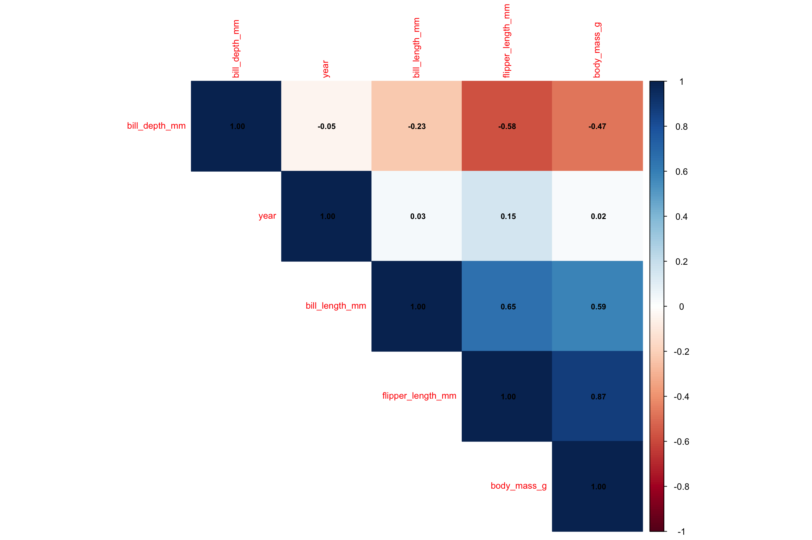
# Feature relationships
penguins_clean %>%
select(species, bill_length_mm, bill_depth_mm,
flipper_length_mm, body_mass_g) %>%
pivot_longer(cols = -species, names_to = "measurement", values_to = "value") %>%
ggplot(aes(x = value, fill = species)) +
geom_density(alpha = 0.5) +
facet_wrap(~measurement, scales = "free") +
scale_fill_viridis_d() +
labs(title = "Feature Distributions by Species")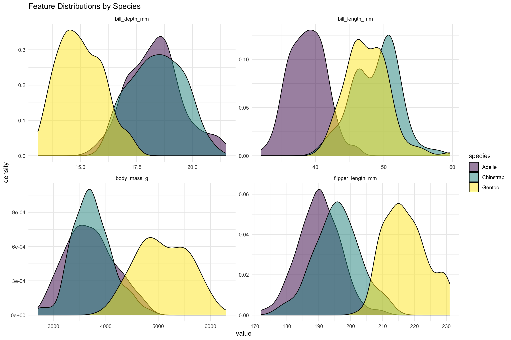
2. Data Splitting
# Initial split (training vs testing)
set.seed(123)
penguin_split <- initial_split(penguins_clean, prop = 0.75, strata = species)
penguin_train <- training(penguin_split)
penguin_test <- testing(penguin_split)
# Check split proportions
tibble(
Dataset = c("Training", "Testing"),
N = c(nrow(penguin_train), nrow(penguin_test)),
Proportion = c(nrow(penguin_train), nrow(penguin_test)) / nrow(penguins_clean)
) %>%
knitr::kable()| Dataset | N | Proportion |
|---|---|---|
| Training | 249 | 0.7477477 |
| Testing | 84 | 0.2522523 |
# Create cross-validation folds
penguin_folds <- vfold_cv(penguin_train, v = 5, strata = species)
penguin_folds# 5-fold cross-validation using stratification
# A tibble: 5 × 2
splits id
<list> <chr>
1 <split [198/51]> Fold1
2 <split [199/50]> Fold2
3 <split [199/50]> Fold3
4 <split [199/50]> Fold4
5 <split [201/48]> Fold53. Feature Engineering with Recipes
# Create a recipe
penguin_recipe <- recipe(species ~ ., data = penguin_train) %>%
# Remove unnecessary variables
step_rm(year) %>%
# Convert factors to dummy variables
step_dummy(all_nominal_predictors()) %>%
# Normalize numeric predictors
step_normalize(all_numeric_predictors()) %>%
# Remove zero variance predictors
step_zv(all_predictors())
# View the recipe
penguin_recipe
# Prepare and bake to see transformed data
penguin_prep <- prep(penguin_recipe)
bake(penguin_prep, new_data = penguin_train %>% head())# A tibble: 6 × 8
bill_length_mm bill_depth_mm flipper_length_mm body_mass_g species
<dbl> <dbl> <dbl> <dbl> <fct>
1 -0.683 0.393 -0.437 -1.21 Adelie
2 -1.35 1.05 -0.578 -0.963 Adelie
3 -0.942 0.293 -1.42 -0.751 Adelie
4 -0.886 1.20 -0.437 0.520 Adelie
5 -0.535 0.192 -1.35 -1.27 Adelie
6 -0.997 2.00 -0.719 -0.539 Adelie
# ℹ 3 more variables: island_Dream <dbl>, island_Torgersen <dbl>,
# sex_male <dbl>4. Model Specification
# Specify different models
# Multinomial regression (for multiclass classification)
multinom_spec <- multinom_reg() %>%
set_engine("nnet") %>%
set_mode("classification")
# Random forest
rf_spec <- rand_forest(
trees = 100,
min_n = 5
) %>%
set_engine("ranger", importance = "impurity") %>%
set_mode("classification")
# Support vector machine
svm_spec <- svm_rbf(
cost = 1,
rbf_sigma = 0.01
) %>%
set_engine("kernlab") %>%
set_mode("classification")
print("Model specifications created")[1] "Model specifications created"5. Creating Workflows
# Combine recipe and model into workflows
multinom_workflow <- workflow() %>%
add_recipe(penguin_recipe) %>%
add_model(multinom_spec)
rf_workflow <- workflow() %>%
add_recipe(penguin_recipe) %>%
add_model(rf_spec)
svm_workflow <- workflow() %>%
add_recipe(penguin_recipe) %>%
add_model(svm_spec)
multinom_workflow══ Workflow ════════════════════════════════════════════════════════════════════
Preprocessor: Recipe
Model: multinom_reg()
── Preprocessor ────────────────────────────────────────────────────────────────
4 Recipe Steps
• step_rm()
• step_dummy()
• step_normalize()
• step_zv()
── Model ───────────────────────────────────────────────────────────────────────
Multinomial Regression Model Specification (classification)
Computational engine: nnet 6. Model Training and Evaluation
# Fit models using cross-validation
# For multiclass problems, we'll use accuracy and multiclass AUC
multinom_cv <- fit_resamples(
multinom_workflow,
resamples = penguin_folds,
metrics = metric_set(accuracy, roc_auc),
control = control_resamples(save_pred = TRUE)
)
rf_cv <- fit_resamples(
rf_workflow,
resamples = penguin_folds,
metrics = metric_set(accuracy, roc_auc),
control = control_resamples(save_pred = TRUE)
)
# Compare models
model_comparison <- bind_rows(
collect_metrics(multinom_cv) %>% mutate(model = "Multinomial Regression"),
collect_metrics(rf_cv) %>% mutate(model = "Random Forest")
)
# Visualize comparison
ggplot(model_comparison, aes(x = model, y = mean, fill = model)) +
geom_col() +
geom_errorbar(aes(ymin = mean - std_err, ymax = mean + std_err), width = 0.2) +
facet_wrap(~.metric, scales = "free_y") +
scale_fill_viridis_d() +
labs(
title = "Model Performance Comparison",
subtitle = "5-fold cross-validation results",
y = "Score"
) +
theme(legend.position = "none", axis.text.x = element_text(angle = 45, hjust = 1))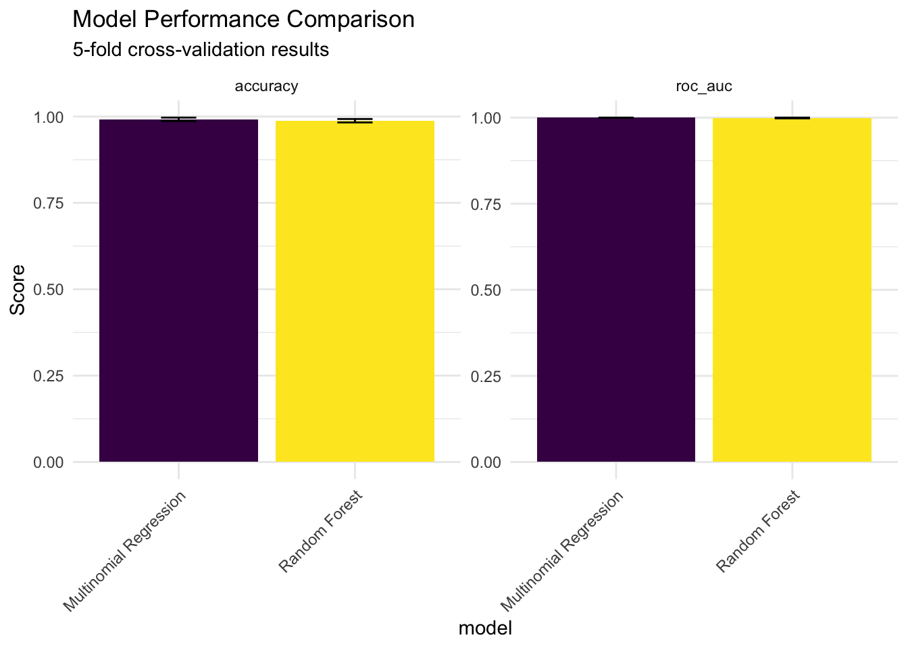
7. Final Model Training
# Train final model on full training set
final_model <- rf_workflow %>%
fit(penguin_train)
# Make predictions on test set
predictions <- final_model %>%
predict(penguin_test) %>%
bind_cols(penguin_test %>% select(species))
# Confusion matrix
conf_mat <- predictions %>%
conf_mat(truth = species, estimate = .pred_class)
conf_mat Truth
Prediction Adelie Chinstrap Gentoo
Adelie 37 0 0
Chinstrap 0 17 0
Gentoo 0 0 30# Visualize confusion matrix
autoplot(conf_mat, type = "heatmap") +
scale_fill_gradient(low = "white", high = "darkblue") +
labs(title = "Confusion Matrix - Random Forest")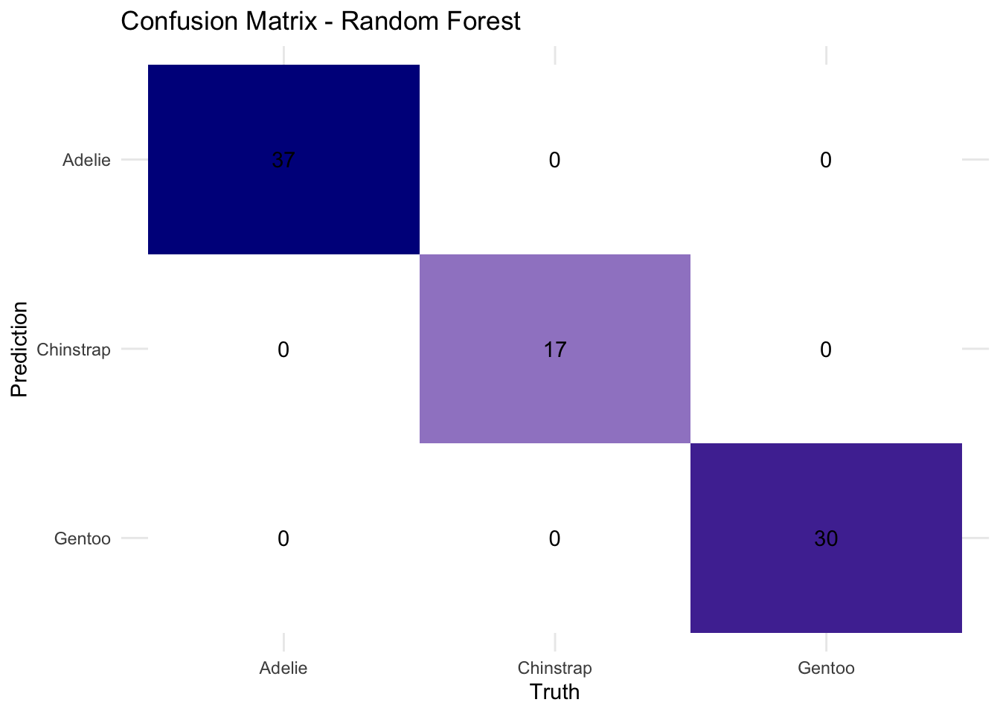
8. Model Interpretation
# Feature importance
final_rf <- final_model %>%
extract_fit_parsnip()
# Variable importance plot
if (require(vip, quietly = TRUE)) {
vip(final_rf, num_features = 10) +
labs(title = "Feature Importance - Random Forest")
}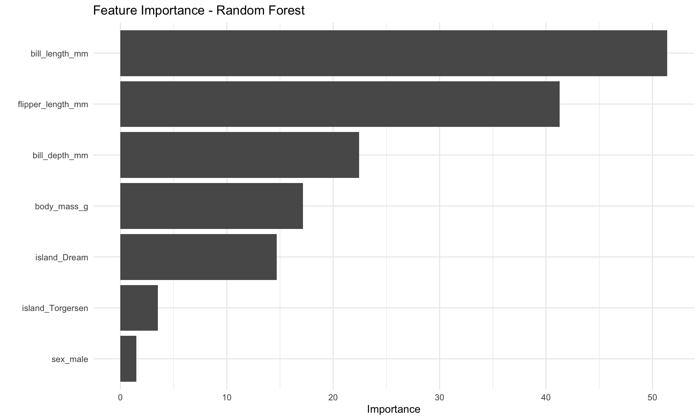
# Prediction probabilities
prob_predictions <- final_model %>%
predict(penguin_test, type = "prob") %>%
bind_cols(penguin_test %>% select(species))
# ROC curves for multiclass
if (require(yardstick, quietly = TRUE)) {
roc_data <- prob_predictions %>%
roc_curve(truth = species, .pred_Adelie:.pred_Gentoo)
autoplot(roc_data) +
labs(
title = "ROC Curves by Species",
subtitle = "One-vs-All approach"
)
}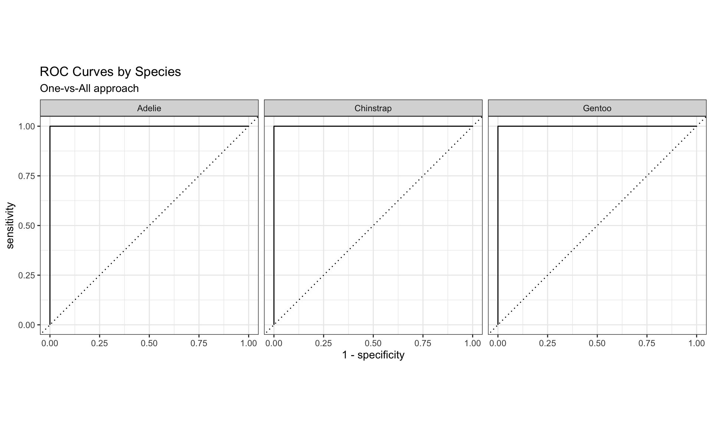
Cross-Validation Theory
Why Cross-Validation?
Cross-validation helps us: 1. Estimate model performance on unseen data 2. Detect overfitting 3. Compare different models fairly 4. Make better use of limited data
Types of Cross-Validation
# Demonstrate different CV strategies
set.seed(123)
sample_data <- tibble(
id = 1:100,
x = rnorm(100),
y = 2 * x + rnorm(100, sd = 0.5),
group = rep(1:10, each = 10),
time = rep(1:10, 10)
)
# Different CV strategies
cv_strategies <- list(
"5-Fold CV" = vfold_cv(sample_data, v = 5),
"10-Fold CV" = vfold_cv(sample_data, v = 10),
"Leave-One-Out CV" = loo_cv(sample_data),
"Bootstrap" = bootstraps(sample_data, times = 5),
"Group CV" = group_vfold_cv(sample_data, group = group, v = 5)
)
# Visualize fold assignments
fold_viz <- vfold_cv(sample_data, v = 5) %>%
mutate(fold_data = map(splits, analysis)) %>%
unnest(fold_data, names_sep = "_") %>%
select(obs_id = fold_data_id, Fold = id) %>%
distinct()
ggplot(fold_viz, aes(x = obs_id, y = 1, fill = Fold)) +
geom_tile(height = 0.8) +
scale_fill_viridis_d() +
labs(
title = "5-Fold Cross-Validation: Data Assignment",
subtitle = "Each observation appears in exactly one test fold",
x = "Observation ID",
y = ""
) +
theme(axis.text.y = element_blank(), axis.ticks.y = element_blank())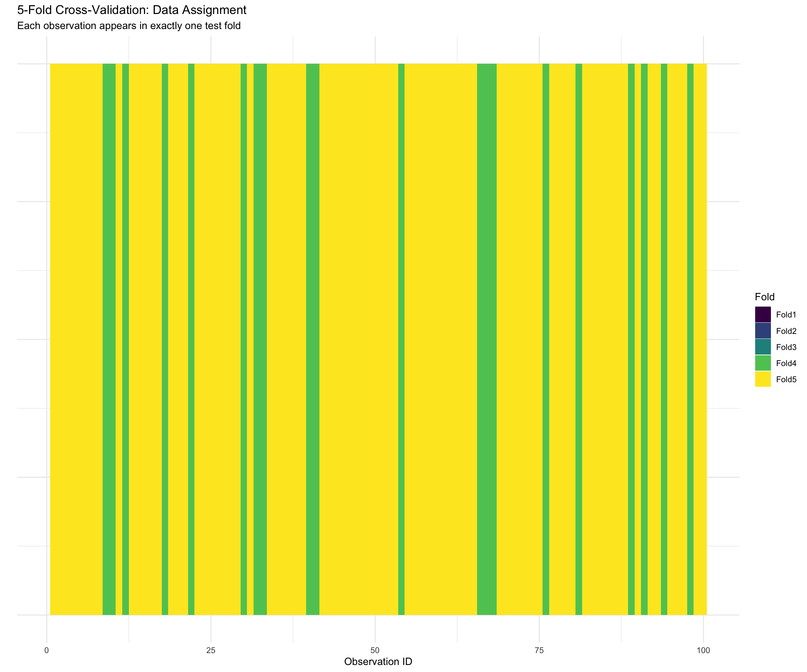
Mathematical Foundation of CV
For k-fold cross-validation, the CV estimate of prediction error is:
\[CV_{(k)} = \frac{1}{k} \sum_{i=1}^{k} MSE_i\]
Where \(MSE_i\) is the mean squared error on fold \(i\).
Model Selection Theory
Information Criteria
# Demonstrate AIC/BIC for model selection
models_to_compare <- list(
"Simple" = lm(body_mass_g ~ bill_length_mm, data = penguin_train),
"Moderate" = lm(body_mass_g ~ bill_length_mm + flipper_length_mm, data = penguin_train),
"Complex" = lm(body_mass_g ~ bill_length_mm + flipper_length_mm +
bill_depth_mm + island + sex, data = penguin_train),
"Very Complex" = lm(body_mass_g ~ .^2, data = penguin_train) # All interactions
)
model_selection <- map_df(names(models_to_compare), function(name) {
model <- models_to_compare[[name]]
tibble(
Model = name,
Parameters = length(coef(model)),
AIC = AIC(model),
BIC = BIC(model),
`Adj R²` = summary(model)$adj.r.squared
)
})
model_selection %>%
arrange(AIC) %>%
knitr::kable(digits = 2)| Model | Parameters | AIC | BIC | Adj R² |
|---|---|---|---|---|
| Very Complex | 44 | 3566.11 | 3710.33 | 0.88 |
| Complex | 7 | 3607.11 | 3635.25 | 0.84 |
| Moderate | 3 | 3699.53 | 3713.59 | 0.76 |
| Simple | 2 | 3948.30 | 3958.85 | 0.35 |
Regularization Theory
Regularization adds a penalty term to prevent overfitting:
Ridge Regression (L2): \[\min_{\beta} \sum_{i=1}^{n} (y_i - \beta_0 - \sum_{j=1}^{p} \beta_j x_{ij})^2 + \lambda \sum_{j=1}^{p} \beta_j^2\]
Lasso Regression (L1): \[\min_{\beta} \sum_{i=1}^{n} (y_i - \beta_0 - \sum_{j=1}^{p} \beta_j x_{ij})^2 + \lambda \sum_{j=1}^{p} |\beta_j|\]
# Demonstrate regularization
library(glmnet)
# Prepare data
X <- model.matrix(body_mass_g ~ . - 1, data = penguin_train %>% select(-species, -year))
y <- penguin_train$body_mass_g
# Fit ridge and lasso
ridge_fit <- glmnet(X, y, alpha = 0) # Ridge
lasso_fit <- glmnet(X, y, alpha = 1) # Lasso
# Plot coefficient paths
par(mfrow = c(1, 2))
plot(ridge_fit, xvar = "lambda", main = "Ridge Regression")
plot(lasso_fit, xvar = "lambda", main = "Lasso Regression")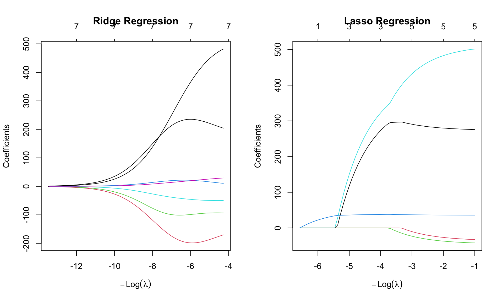
Best Practices in Machine Learning
1. Data Leakage Prevention
# WRONG: Preprocessing before splitting
# This leaks information from test set into training
wrong_way <- penguins_clean %>%
mutate(bill_length_scaled = scale(bill_length_mm)[,1]) # Uses all data!
# RIGHT: Preprocessing within training set only
right_way <- recipe(species ~ ., data = penguin_train) %>%
step_normalize(all_numeric_predictors()) # Only uses training data2. Proper Evaluation
Always use: - Separate test set (never touched during development) - Cross-validation for model selection - Appropriate metrics for your problem
3. Feature Engineering Guidelines
- Domain knowledge is crucial
- Start simple, add complexity gradually
- Validate feature importance
- Watch for multicollinearity
Exercises
Exercise 1: Implement Cross-Validation
Compare different CV strategies on the penguins dataset:
# Your solution
cv_comparison <- tibble(
strategy = c("5-Fold", "10-Fold", "Bootstrap", "Monte Carlo"),
cv_object = list(
vfold_cv(penguin_train, v = 5),
vfold_cv(penguin_train, v = 10),
bootstraps(penguin_train, times = 25),
mc_cv(penguin_train, prop = 0.75, times = 25)
)
)
# Fit a simple model with each CV strategy
simple_spec <- multinom_reg() %>%
set_engine("nnet")
simple_recipe <- recipe(species ~ bill_length_mm + bill_depth_mm,
data = penguin_train) %>%
step_normalize(all_predictors())
simple_workflow <- workflow() %>%
add_recipe(simple_recipe) %>%
add_model(simple_spec)
# Compare results
cv_results <- cv_comparison %>%
mutate(
fits = map(cv_object, ~ fit_resamples(simple_workflow, resamples = .)),
metrics = map(fits, collect_metrics)
) %>%
unnest(metrics) %>%
filter(.metric == "accuracy") %>%
select(strategy, mean, std_err)
cv_results %>%
ggplot(aes(x = strategy, y = mean)) +
geom_point(size = 3) +
geom_errorbar(aes(ymin = mean - std_err, ymax = mean + std_err), width = 0.2) +
labs(title = "Cross-Validation Strategy Comparison",
y = "Accuracy")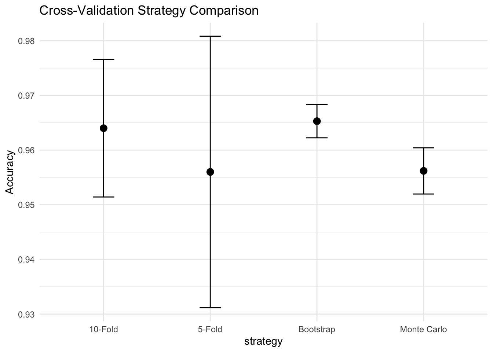
Exercise 2: Bias-Variance Analysis
Create models with different complexity levels and analyze their bias-variance tradeoff:
# Your solution
# Create polynomial features of different degrees
complexity_levels <- 1:5
model_fits <- map(complexity_levels, function(degree) {
recipe_poly <- recipe(body_mass_g ~ flipper_length_mm, data = penguin_train) %>%
step_poly(flipper_length_mm, degree = degree)
lm_spec <- linear_reg() %>%
set_engine("lm")
workflow() %>%
add_recipe(recipe_poly) %>%
add_model(lm_spec) %>%
fit(penguin_train)
})
# Evaluate on training and test sets
evaluation <- map_df(1:length(model_fits), function(i) {
model <- model_fits[[i]]
train_pred <- predict(model, penguin_train)
test_pred <- predict(model, penguin_test)
tibble(
complexity = complexity_levels[i],
train_rmse = rmse_vec(penguin_train$body_mass_g, train_pred$.pred),
test_rmse = rmse_vec(penguin_test$body_mass_g, test_pred$.pred)
)
})
evaluation %>%
pivot_longer(cols = c(train_rmse, test_rmse),
names_to = "dataset", values_to = "rmse") %>%
ggplot(aes(x = complexity, y = rmse, color = dataset)) +
geom_line(linewidth = 1.2) +
geom_point(size = 3) +
labs(title = "Model Complexity vs Error",
x = "Polynomial Degree",
y = "RMSE") +
scale_color_manual(values = c("train_rmse" = "blue", "test_rmse" = "red"))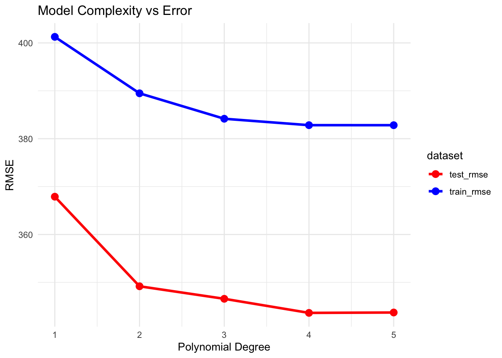
Exercise 3: Build a Complete Pipeline
Create a complete tidymodels pipeline for a regression problem:
# Your solution
# Predict penguin body mass
mass_split <- initial_split(penguins_clean, prop = 0.8)
mass_train <- training(mass_split)
mass_test <- testing(mass_split)
# Create recipe with feature engineering
mass_recipe <- recipe(body_mass_g ~ ., data = mass_train) %>%
step_rm(year) %>%
step_impute_median(all_numeric_predictors()) %>%
step_impute_mode(all_nominal_predictors()) %>%
step_dummy(all_nominal_predictors()) %>%
step_normalize(all_numeric_predictors()) %>%
step_interact(terms = ~ bill_length_mm:bill_depth_mm)
# Specify model
rf_reg_spec <- rand_forest(
trees = 200,
min_n = 10
) %>%
set_engine("ranger", importance = "impurity") %>%
set_mode("regression")
# Create workflow
mass_workflow <- workflow() %>%
add_recipe(mass_recipe) %>%
add_model(rf_reg_spec)
# Fit and evaluate
mass_fit <- mass_workflow %>%
fit(mass_train)
# Predictions
mass_predictions <- mass_fit %>%
predict(mass_test) %>%
bind_cols(mass_test)
# Evaluate
metrics <- mass_predictions %>%
metrics(truth = body_mass_g, estimate = .pred)
print(metrics)# A tibble: 3 × 3
.metric .estimator .estimate
<chr> <chr> <dbl>
1 rmse standard 309.
2 rsq standard 0.843
3 mae standard 249. # Visualize predictions
ggplot(mass_predictions, aes(x = body_mass_g, y = .pred)) +
geom_point(alpha = 0.5) +
geom_abline(slope = 1, intercept = 0, color = "red", linetype = "dashed") +
labs(title = "Predicted vs Actual Body Mass",
x = "Actual Mass (g)",
y = "Predicted Mass (g)")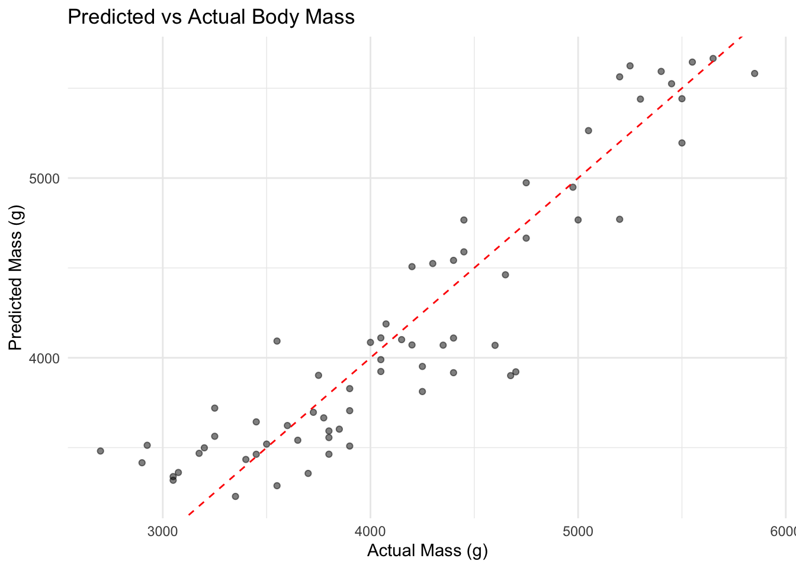
Summary
You’ve learned the theoretical foundations and practical implementation of:
✅ Machine learning fundamentals and theory
✅ Bias-variance tradeoff
✅ Overfitting and underfitting concepts
✅ Cross-validation theory and practice
✅ The tidymodels ecosystem structure
✅ Complete ML workflow implementation
✅ Model selection and evaluation
✅ Best practices in machine learning
What’s Next?
In Chapter 9, we’ll dive deep into data splitting strategies and resampling techniques with rsample.